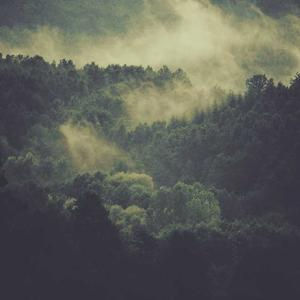

Primera Galeria


¿Qué diferencia hay entre usar una imagen externa o una referenciada de manera
relativa?
La diferencia entre ambas es que una imagen externa es almacenada en el mismo servidor o carpeta
del proyecto web, lo cual hace que el proyecto vaya mas rapido y que al migrar el proyecto a otra computadora o
servidor, no se pierdan las imagenes, mientras que la imagen externa al venir de terceros
dependes del dueño de la imagen, ya que este puede modificarla, borrarla o cambiarla, ademas de que la pagina
puede ir mas lenta si el servidor de donde proviene la imagen es lento.
¿Que pasa con alt cuando la imagen no es cargada correctamente?
En una de las imagenes se muestra una leyenda que describe la imagen brevemente y la otra no.
-
Gato Piloto

Listo para el despegue en el simulador de vuelo.
-
Gato Gamer Táctico
.jfif)
Nadie me gana en el Counter-Strike esta noche.
-
Snoopy Playero
.jfif)
Disfrutando de la brisa marina y la tranquilidad del océano.
-
La Pandilla Callejera
.jfif)
Dominando el barrio con estilo y seriedad.
-
Fiesta Animal
.jfif)
El mejor yate de la ciudad tiene a los mejores invitados.
-
Relajación Total
.jfif)
Escuchando lo-fi beats para dormir y estudiar.
-
Brillo Estelar
.jfif)
Cuando el futuro es tan brillante que necesitas gafas.
-
Capitán Canino
.jfif)
Navegando hacia el horizonte con mucho estilo.
-
Navidad con Flow
.jfif)
Esperando a Santa con toda la actitud festiva.
-
Gato Streamer

Una pausa necesaria para hidratarse entre partida y partida.

¿cómo se ve? Si se ve mal: ¿por qué?
Se ve mal, porque estamos estirando la imagen por mas de que agrandemos la imagen, esta mantiene la calidad de
una imagen de 300x300.
¿Qué conclusión extrae de los tres incisos anteriores?
La mejor práctica es usar imágenes que ya tengan el tamaño que necesitas en tu diseño y controlar sus dimensiones
con CSS de forma flexible.